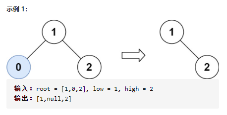
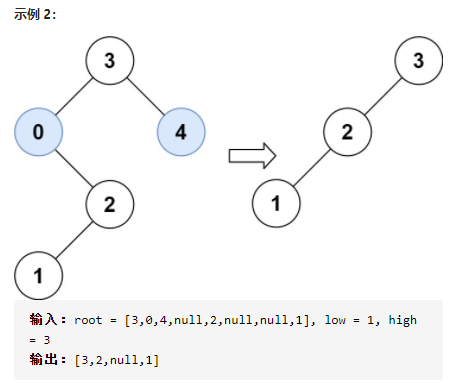

669. 修剪二叉搜索树
给你二叉搜索树的根节点 root ，同时给定最小边界low 和最大边界 high。通过修剪二叉搜索树，使得所有节点的值在[low, high]中。修剪树不应该改变保留在树中的元素的相对结构（即，如果没有被移除，原有的父代子代关系都应当保留）。 可以证明，存在唯一的答案。
所以结果应当返回修剪好的二叉搜索树的新的根节点。注意，根节点可能会根据给定的边界发生改变。

image-20210619164548851

image-20210619164609679
解法
1.递归
思路
结合二叉搜索树的特点，节点值大于它的左节点并且小于它的右节点
那么：
当节点值 < L ，把它的左子树抛弃掉，继续修剪它的右子树
当节点值 > R ，把它的右子树抛弃掉，继续修剪它的左子树
否则当前节点值满足 L < node.val < R ，那么它的左右子树都有可能仍然有符合条件
的节点值，所以要继续修剪左、右子树
/**
* Definition for a binary tree node.
* function TreeNode(val) {
* this.val = val;
* this.left = this.right = null;
* }
*/
/**
* @param {TreeNode} root
* @param {number} L
* @param {number} R
* @return {TreeNode}
*/
var trimBST = function(root, L, R) {
if (root === null) return root;
if (root.val < L) return trimBST(root.right, L, R);
if (root.val > R) return trimBST(root.left, L, R);
root.left = trimBST(root.left, L, R);
root.right = trimBST(root.right, L, R);
return root;
};